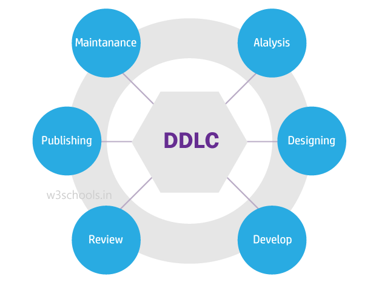

Document development life cycle
Document Development Life Cycle (DDLC) can be defined as the practice of developing a document that involves a systematic process that continues in a cyclic order.

Requirement Analysis
In this stage, technical writers or content developers must collect specific information regarding the product from product requisite, SMEs, online help or seniors, and clients. It is because technical writers have to prepare the content as per the audience. It has an essential subsection: Audience analysis where professional writers and documentation experts have to explore who will use the product associated with the writing, user’s need of building the product, as well as assess of skill along with the expertise of the target audience before writing the document.
Usually, technical writers assemble such information from Subject Matter Experts (SMEs). It saves the writer’s time to understand the product. Since every company has SMEs for various departments, technical writers and content creators can approach them. Another potential target to get info regarding the product and its working mechanism is from software developers. Time, cost, and resource estimation are also done in this phase.
- Identify the audience (determine if the reader will be a technical user or a novice user)
- Identify the type of a document to create
- Identify the cost (based on the number of screens in case of a Website guide)
- Identify the SMEs
- Identify various sources of related documentation
- Request for access to the relevant resources
- Identify the technical and functional reviewers
Designing Phase
In this designing stage, technical writers need to design the document or content by using a proper layout, format, style and strategy. Professional writers use various authoring tools and bulk document processing applications such as RoboHelp, Madcap Flare, MS Office, oXygen. Also, capturing screen images and product design tools like Snagit are used. Camtasia is another application used for video capturing and editing. XML and DITA are also used for creating better formatting of documents. These are the tools and technologies technical writer needs to know.
- Gather related documentation
- Install the required tools
- Create a strategy to publish work on time
- Create the Table of Content (TOC)
- Create the Template and Style Guide
Developing the content
The content is written as per the product features, requirements, and understanding made in the first phase. Once the product is analyzed, the product is run, drafting is done as per format and template.
- Create content
- Create figures
- Create the index, appendix, glossary as requested
Editing / Proofreading
Next comes the editing phase, where the document is tested, as per the client's/user’s necessity, requirements, and product features. Technical writing editors, peer reviewers, or the content review expert (who might be the head of the professional writing department), will test and check the complete documentation. Here, technical writers verify the technical part, figures, grammar mistakes, and document format. Proofreading is a part of it where content experts check the entire draft to remove bugs from the documentation drafting.
- Review the document with the appointed SME
- Peer review
- Technical review
- Functional review
Publishing
Here, in this stage, technical writers bring out the document, release it with the product or as online help, and take a print of the entire document. The print is taken to check if the alignment is proper or not, and reading the hard copy also helps in getting a clear picture of the format and a few other documentation errors. Hyperlinks are added to the content in case of an online release.
Maintenance
In this stage, if there is an update required to the document after the initial release, technical writers or content developers add updates, alter or modify the documentation. As the release of new products into the market, the online documentation or the document released earlier is updated.
- Constant deliverables maintenance
- Content reuse analysis
- Redundant data elimination
- Template revision
- New product feature inclusion